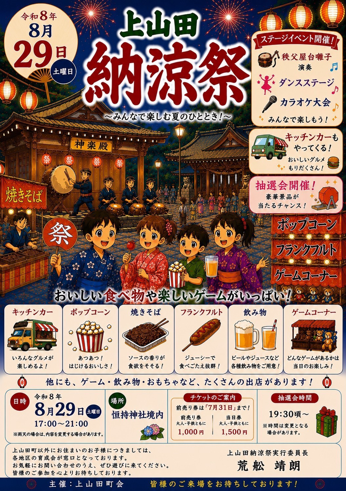
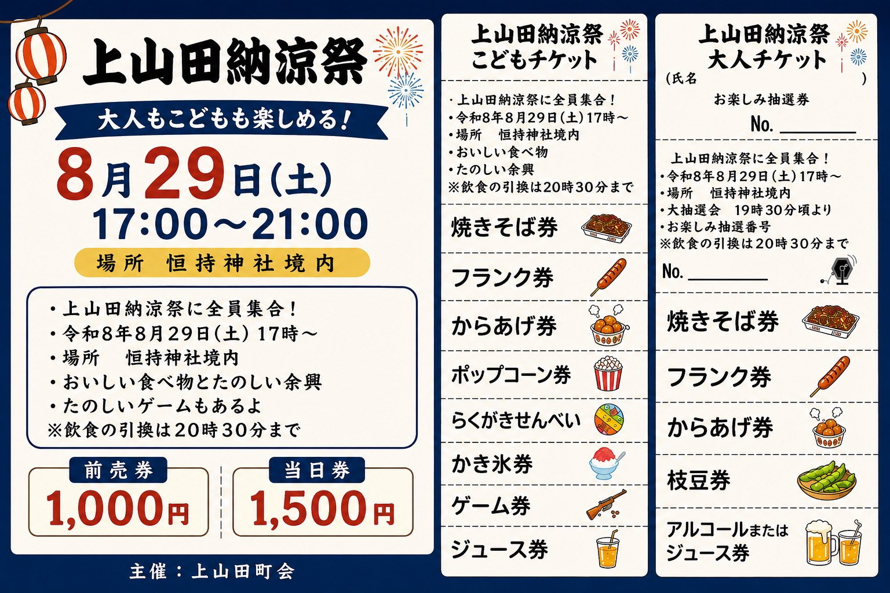

NEW
地域イベント
2026.07.21
上山田納涼祭のお知らせ（8/29）
上山田町会主催の納涼祭が開催されます。育成会に関わるご家族であればどなたでも参加できます！

イベント詳細
- ●日時：8/29（土）17:00〜21:00
- ●場所：恒持神社境内
- ●内容：ステージ（屋台囃子・ダンス・カラオケ）、キッチンカー、焼きそば、フランクフルト、ゲームコーナー、抽選会（19:30〜）など
チケット情報
- ●前売り券：大人・子供とも 1,000円（7/31まで）
- ●当日券：大人・子供とも 1,500円
- ●前売り券ご希望の方は、橋本までお名前をご連絡ください
チケット交換
- ●8/9（日）17:00〜19:00 @恒持神社
- ●※飲食の引換は当日20:30まで
